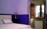
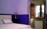
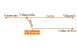
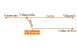

|
 |
 |
 |
| COUNTRY HOUSE |  |
LOCATION | |
CONTACT US | MONASTERY | GOLF | |
ROUTES | |
BEACHES | |
CELEBRATIONS | |
|
|
|
COUNTRY HOUSES All the lodges of rural tourism in the council of Meis offer the following services in a radius less than 20 km. and access by high speed road: |
|
CASAL DE FOLGUEIRA Country house Location 36637 Talide, 2 - Meis (Pontevedra) Telephone: 986 710 043 | Fax: 986 710 043 

 Accommodation: 5 double rooms. Other services Dining room - under booking | Parking | TV-DVD | Living room | Cradle | Laundry | Garden and forest | Bicycles | Pets accepted | Internet | Credit cards. CABEZA DE BOI Country house - Hostel Location Cabeza de Boi, 12. Santa María de Armenteira - Meis (Pontevedra). C.P.: 36637 Telephone: 986710853 | Fax: 986710853  

 Accommodation: 4 double rooms. Other services Dining room | Parking | TV | Living room | Cradle | Suppletory bed | Use of kitchen | Handicapped accessibility | Laundry | Garden and forest | Bicycles | Pets accepted | Internet | Credit cards. A MOROZA Country house - Hostel Location A Moroza, 1. Santa María de Paradela - Meis (Pontevedra). C.P.: 36616 Telephone: 986715580 | Fax: 986715582 
 
Accommodation: 6 double rooms. Other services Dining room | Parking | TV | Living room | Cradle | Suppletory bed | Use of kitchen | Handicapped accessibility | Laundry | Library | Garden and forest | Bicycles | Pets accepted | Internet | Credit cards. HOSPEDERÍA MONASTERIO DE ARMENTEIRA Hostel-Hotel Location Vilar, 1 A. A Armenteira - Meis (Pontevedra) Telephone: 986 71 83 00 / 627 09 76 96 | Fax: 986 71 05 95 

 Accommodation: 14 single and double rooms. CASA DE ARCOS Country house Location Arcos, 15, San Tomé de Nogueira - Meis (Pontevedra) Telephone: 986 71 54 54 Accommodation: 3 rooms.
|
| Country House | Location | Contact Us | Monastery | Golf Club | Routes | Beaches | Celebrations |